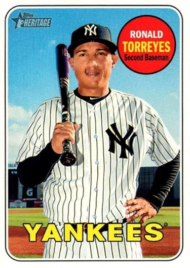

Ronald Torreyes "Toe"
Career Highlights & Facts
(Facts are AI-generated and may require verification)
- Known for a diminutive stature that made the player a fan favorite.
- Demonstrated extreme defensive versatility by playing every infield position.
- Recorded a memorable moment by hitting a grand slam in a blowout victory.
Would you like to find out more about Ronald Torreyes?
This bio is not assigned. Want to write a SABR bio? Contact
bioproject@sabr.org
.
Full Name
Torreyes
Born
September 2, 1992 at Libertador, Distrito Federal (Venezuela)
Ronald Alcides Torreyes is a Venezuelan former professional baseball infielder. He played in Major League Baseball (MLB) for the Los Angeles Dodgers, New York Yankees, Minnesota Twins, and Philadelphia Phillies.
Career Totals
| WAR | AB | H | HR | BA | R | RBI | SB | OBP | SLG | OPS | OPS+ |
|---|---|---|---|---|---|---|---|---|---|---|---|
| 1.2 | 917 | 243 | 11 | .265 | 99 | 98 | 7 | .299 | .361 | .660 | 76 |
Statistics via Baseball-Reference.com
The Original Clue